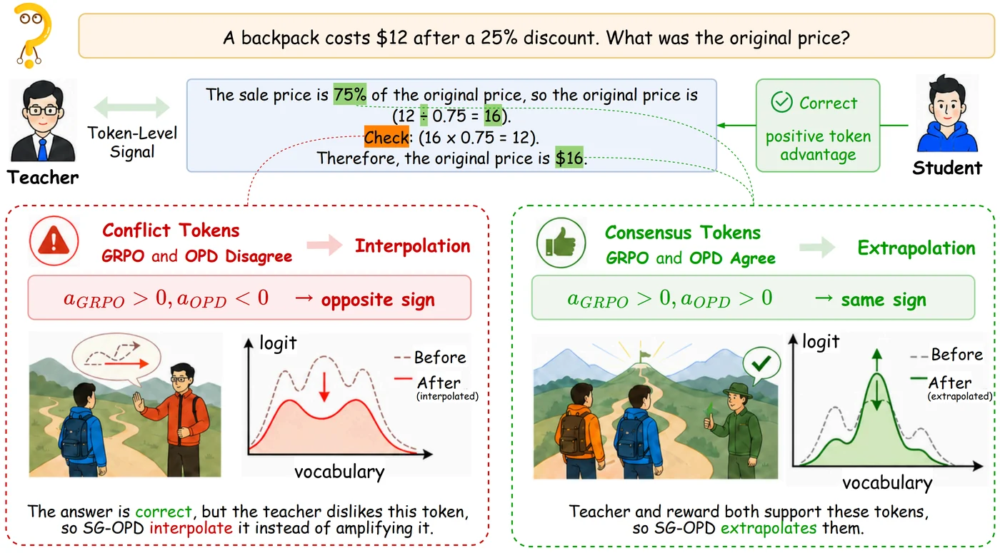
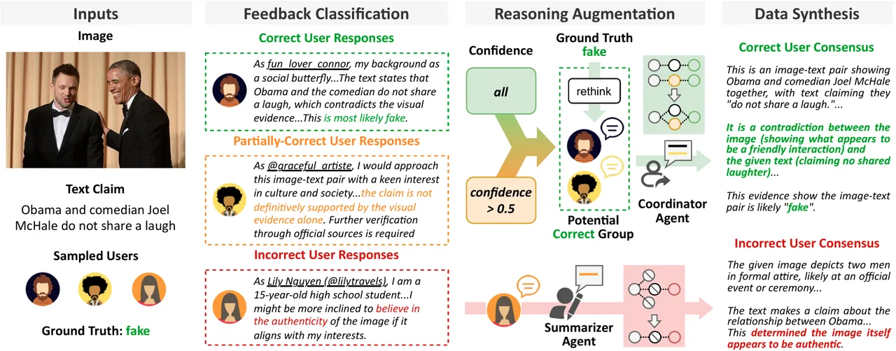
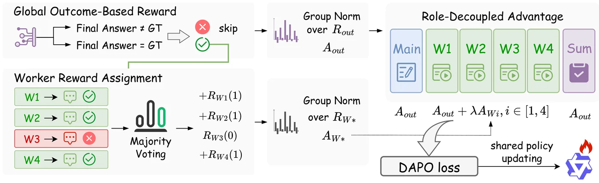
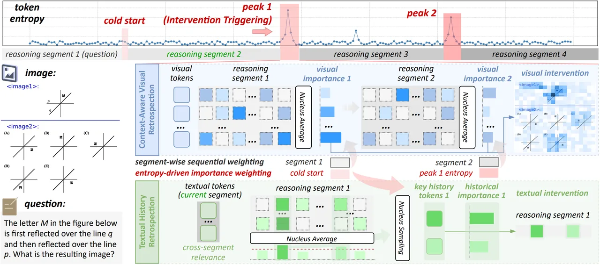
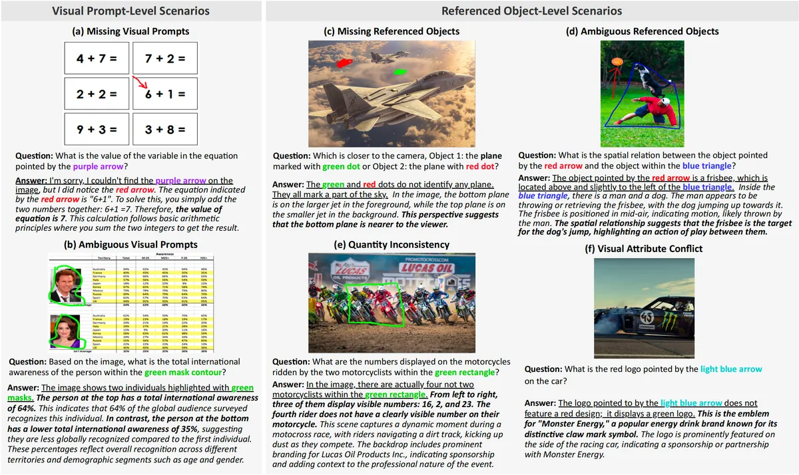
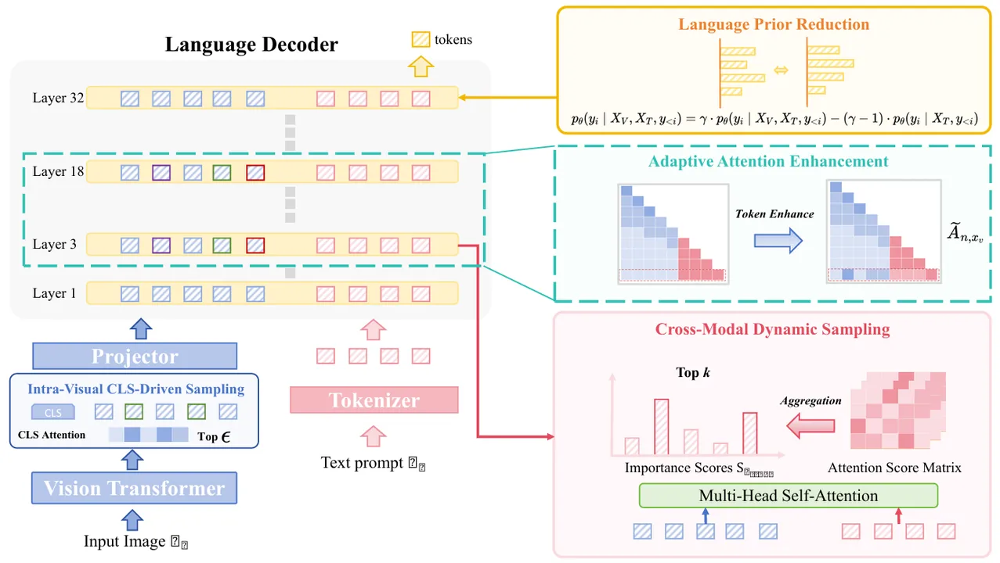
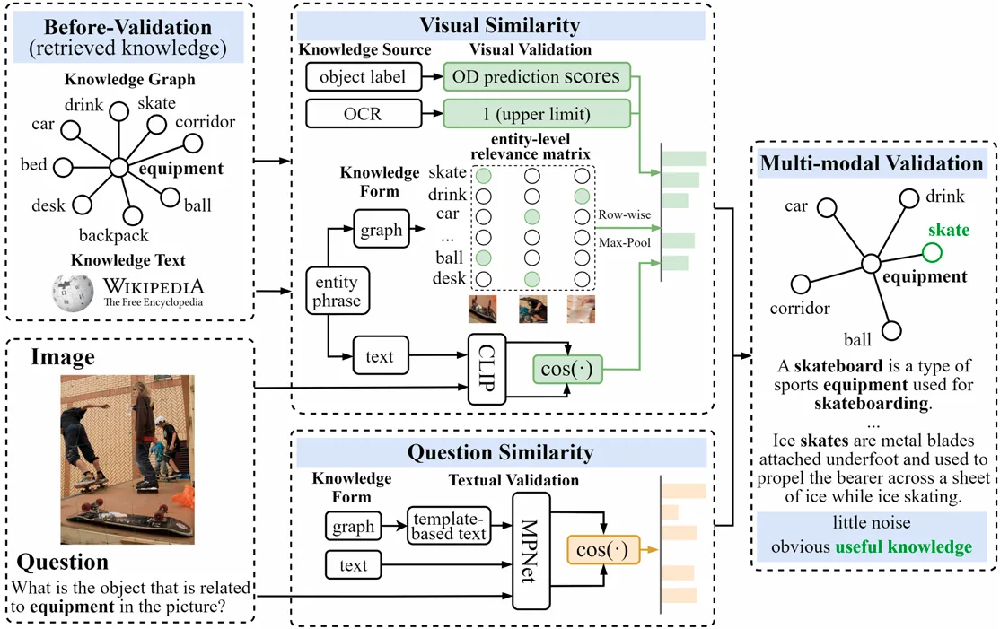
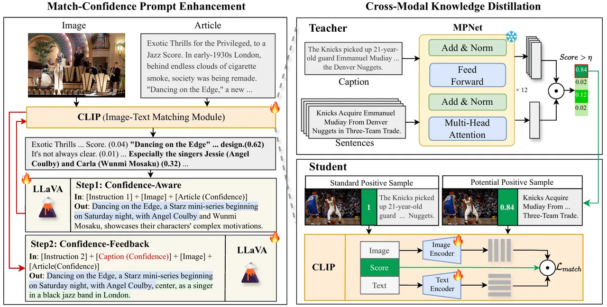
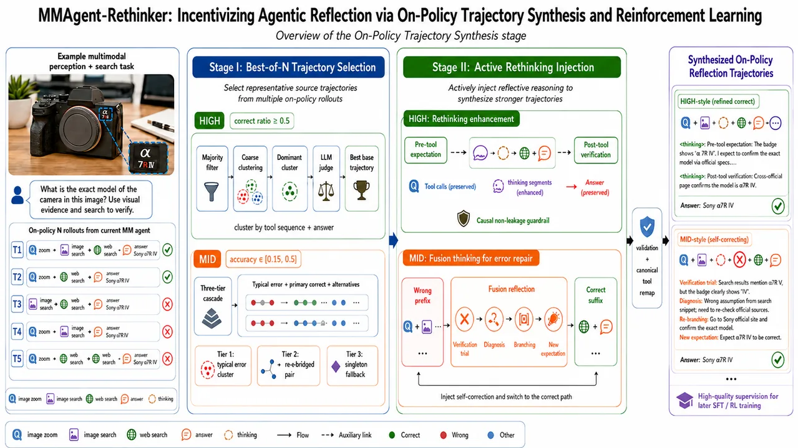

LLM Post-Training Algorithms
Preference optimization, on-policy distillation, RLVR, verifier-guided training, data synthesis, and efficient adaptation for stronger reasoning behavior.
Tianjin University Ph.D. Candidate · LLM Post-Training · Multimodal Understanding
I work on LLM post-training algorithms and multimodal understanding , with current interests including complex visual reasoning, agentic LLMs, hallucination mitigation, and data-centric alignment.
Current Focus
Recent projects span on-policy distillation, multi-agent self-distillation, entropy-driven retrospection, visual expert mixtures, hallucination mitigation, and retrieval-augmented VQA.
These directions organize the projects below: stronger post-training recipes, multimodal reasoning systems, and agentic MLLM pipelines for tool use, search, and faithful generation.
Preference optimization, on-policy distillation, RLVR, verifier-guided training, data synthesis, and efficient adaptation for stronger reasoning behavior.
Complex visual reasoning, multimodal long reasoning, visual-language grounding, retrieval-augmented understanding, and cross-modal evidence validation.
Multimodal agents that decompose tasks, call tools, search visual evidence, reflect on intermediate failures, and recover reasoning trajectories in open-world scenarios.

On-policy distillation for stronger LLM reasoning with sign-consistency gating.

Multi-agent reasoning, self-distilled CoT data, and group-guided preference alignment.

A single-policy multi-agent framework that coordinates role-decoupled agents and reward assignment for stronger visual reasoning.

Training-free retrospection for long multimodal reasoning based on inference-time token entropy.

A mixture-of-specialized-vision-experts framework for faithful MLLM reasoning, using complementary visual insights and token-efficient expert routing.

A benchmark with 308 image-question pairs that probes LMM hallucinations caused by missing, ambiguous, and conflicting synthetic visual prompts and object references.

Dual-modal attention reinforcement for reducing LVLM hallucinations during inference.

Knowledge validation and domain interaction learning for retrieval-augmented VQA.

Cross-modal distillation and feedback learning for faithful news image captioning.
Current industry research centers on generative search LLM pipelines and multimodal base-model projects, alongside academic training in post-training and multimodal understanding.
LLM Application Algorithm Research
Working on the generative search LLM pipeline, focusing on LLM application algorithms across search understanding, retrieval-grounded generation, and answer quality optimization.

Multimodal Base Model Research Intern
Worked on agentic MLLM research for Hunyuan multimodal understanding, including interleaved perception-search data synthesis, tool-driven rejection sampling, and reflection-aware alignment.
Academic Ph.D. track, focused on LLM post-training and multimodal understanding.
Ranked in the top 5% of the program.
GPA 3.7/4.0, ranked in the top 7% of the program.
National First Prize, with work on knowledge-data driven medical time-series modeling.
National Second Prize, with work on credit risk assessment and decision modeling.
The fastest way to reach me is email. The public downloadable material on this site is limited to the CV.